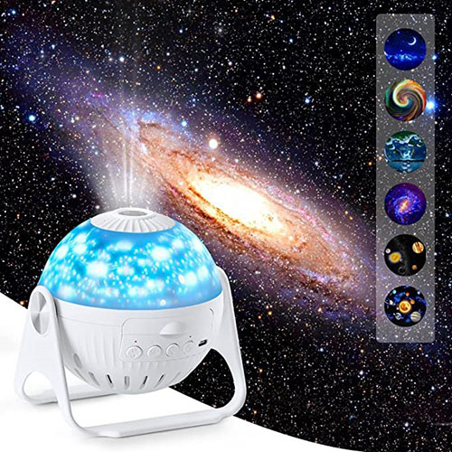

Run the Messier Marathon
It's time for the annual Messier Marathon. Instead of lacing up their Nikes, amateur astronomers will be hauling telescopes, star charts, and a hefty pot of coffee in an all-night vigil hunting the Messier objects.
Messier objects are stellar objects, classified by astronomer Charles Messier in the 18th century, ranging from distant galaxies to star clusters to stellar nebula. March is the only month in the year in which all 110 Messier objects are in the sky. Unfortunately, if you want to see all of them, you have to start looking right after sunset and continue until just before sunrise — hence the term, "marathon."
Ironically, Charles Messier wasn't all that interested in his objects. He made the list in order to avoid seeing them. Messier was more interested in discovering new comets and these beautiful stellar objects were often mistaken for comets before Messier made his list.
Messier objects are stellar objects, classified by astronomer Charles Messier in the 18th century, ranging from distant galaxies to star clusters to stellar nebula. March is the only month in the year in which all 110 Messier objects are in the sky. Unfortunately, if you want to see all of them, you have to start looking right after sunset and continue until just before sunrise — hence the term, "marathon."
Ironically, Charles Messier wasn't all that interested in his objects. He made the list in order to avoid seeing them. Messier was more interested in discovering new comets and these beautiful stellar objects were often mistaken for comets before Messier made his list.
Featured Astronomical Products

Refractor Kit: March Special! Learn about the science of optics by building your own 18" long, 3X refractor telescope.
Price: $10.95
Stock Number: RK01-085
Price: $10.95
Stock Number: RK01-085

NightDisk: View the night sky for any night and time of the year with this attractive and useful star disk.
Price: $19.95
Stock Number: ND25-100
Price: $19.95
Stock Number: ND25-100

Constellation Globe: A beautiful two-way illuminated globe displaying the location of the constellations and various night sky objects.
Price: $49.95
Stock Number: CG13-810
Price: $49.95
Stock Number: CG13-810

Star and Planet Locators: A pack of 25 star and planet locators — perfect for classroom use.
Price: $29.95
Stock Number: RF02-421
Price: $29.95
Stock Number: RF02-421

Rechargeable Red Flashlight: A 4" rechargeable flashlight, employing a red LED to preserve night vision.
Price: $15.95
Stock Number: RF02-421
Price: $15.95
Stock Number: RF02-421

Classroom Planetarium: March Special! Planetarium kit projects more than 300 stars and constellations onto the ceiling or wall. Perfect for classroom use. Red star flashlight included to point out individual stars.
Price: $34.95
Stock Number: CP21-789
Price: $34.95
Stock Number: CP21-789

Solar Mobile: The sun and all nine planets are represented in this attractive mobile. Mobile measures 4 feet across when assembled. Great for classroom demonstrations!
Price: $14.95
Stock Number: SM4-411
Price: $14.95
Stock Number: SM4-411

Solar Mobile Kit: Kit includes 12 styrofoam shapes with wire and connecting rods to create a hanging mobile of the solar system. Makes 20 mobiles. Instructions and lesson plans included.
Price: $29.95
Stock Number: SM5-411
Price: $29.95
Stock Number: SM5-411
Comments From Our Astronomy Customers
"Thank you for your excellent service. I purchased the Newton 3" refractor for our astronomy lab. The view of Saturn was an exciting moment for the entire class." D. Hillbert. San Jose, CA
"I appreciate the prompt delivery of the pack of star disks. Your company is a great boon to science teachers everywhere." S. Fawson. Cleveland, OH
"The MC5 Maksutov-Cassegrain was delivered as promised: on-time and at a great price. When it's time to get my next scope, I'll look to your company first." B. Davidman. Greely, CO